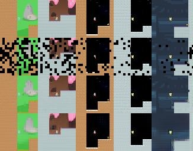
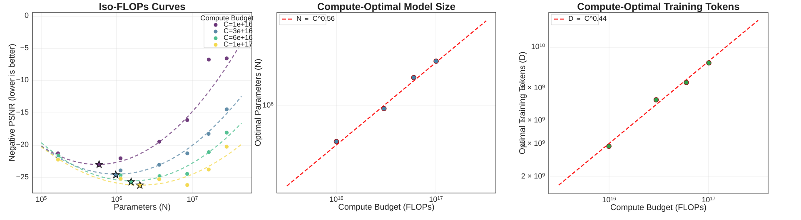
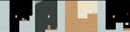
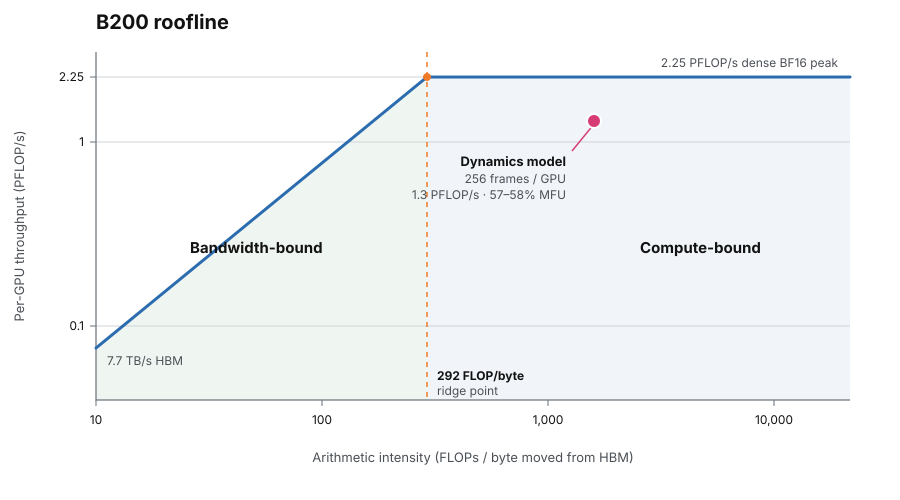
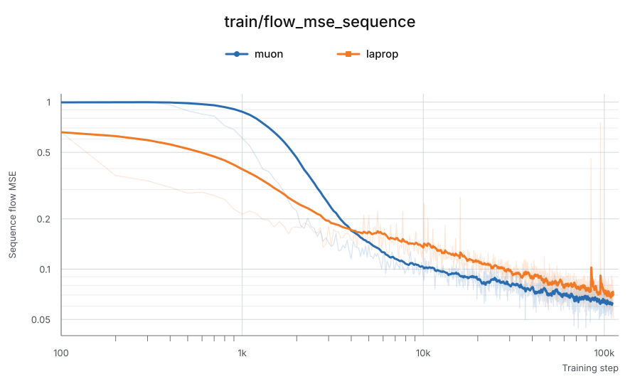

One of the most time consuming parts of doing science is climbing up to the shoulders of the giants. While this can be a very instructive experience, sometimes it’s very nice to be teleported right on top of it and get to work right away pushing the boundary of human knowledge.
In the last few months, with the support from Reactor, we’ve been working on making a frontier-level world model. We release and open source the model, the training code, and in this blog post with all the lessons we learned along the way. We want to make frontier research accessible to everyone and hope this will accelerate progress in the field.
You can also play with our model thanks to the reactor runtime!
A survival guide to training a world model
We do these things not because they are easy, but because we thought they were going to be easy
Figure 1: The search space
When starting a new project, you have to define:
The goal
The starting point
The search space
Our main objective was to reproduce the Dreamer4 paper . That gave us the search space: basically whatever method and architecture they used inside of that paper, and it gave us the goal: making a minecraft world model. As starting point we chose a simpler game than can be trained on a single graphics card: coinrun
We purposefully refrained from using different methods that were not in the original paper as that would have made the search space wider.
The starting point
Figure 2: Coinrun. Run to get the coin
This is coinrun: It’s a 2D platform game where each level is procedurally generated. As the name would suggest, the goal is to run to get the coin.
With this simple game it is possible to do every step of the Dreamer 4 paper but with some really nice added benefits:
Just one gpu (much simpler to debug)
Fast iteration loop (much smaller training time)
Once done, the codebase will have all the core logic ready and working
The search space
The architecture is made of two main parts: The tokenizer and the dynamics model. Both use the same model architecture backbone: the block-causal transformer.
What sets it apart is the fact that there are two different attention-based layer
Space Layer: where information propagates within all the elements that represent a single frame
Causal Time Layer: where information propagates between different frames
The Tokenizer (Autoencoder)
If you have ever trained a VAE in the past, you know how terrible of an experience that is. Most of the time the wisest thing to do is to give up and take an off-the-shelf one.
In this project we’ve trained a transformer-based Masked Autoencoder with ~100x compression, and we probably could have aimed higher.
This architecture is really cool because:
Masking makes the latent space more diffusable
There is no need for the KL and adversarial loss
It’s very fast to train
It’s scalable
All of the above make it easier to train compared to the typical VAE
The Dynamics Model (World Model)
World models fundamentally work by doing “next frame prediction”. Each frame is generated as an image conditioned on the previous ones. The dynamics model is trained with diffusion forcing with flow matching and shortcut models .
Figure 3: Tokenizer architectureFigure 4: Diffusion forcing training (left) and inference (right)
Other than predicting just the next frame, we worked on predicting the next action as well.
Typically, the rollout alternates between the world and the agent. Given the previous action $a_{t-1}$, the dynamics predicts the next state $s_t$; the policy $\pi_t$ observes that state and samples the next action:
Figure 5: A rollout alternates between predicting the next state and sampling the next action.
Evaluating the transition and policy as separate modules would require repeatedly moving between them. It would also prevent them from sharing the same representation and transformer parameters. Instead, we would like to process all timesteps in parallel during training and reuse the same computation for both the world and the agent.
This architecture folds the sequence into blocks:
$$
B_t = (a_{t-1}, s_t, \pi_t)
$$
Within each block, spatial attention implements $(a_{t-1} \to s_t \to \pi_t)$
Figure 6: Folding the rollout into timestep blocks. Spatial attention operates within each block, while causal temporal attention connects blocks across time.
What does $s_t$ contain? The state is the part generated through diffusion—or, more precisely, the model diffuses its latent spatial tokens. The state computation therefore includes:
a noise-level and shortcut step-size token describing how far the model should advance in one denoising step, following Shortcut Models ;
spatial latent tokens representing the visual state;
register tokens, which provide shared workspace for internal computation.
Together, these tokens let each space layer turn the previous action and a noisy latent into the next clean latent state.
Figure 7: Space-layer attention in one dynamics timestep. The previous action A conditions the denoising step τ, spatial latents X, and shared registers R; the agent token π reads the resulting state to predict behavior. World-model tokens cannot read π, so task and policy information can affect future states only through the next action.
Coinrun experiments
As mentioned before, our first experiments were in coinrun.
We first trained the tokenizer and we’ve also done some scaling experiments and interestingly the compute optimal number of parameters and number of data points scale as the square root of compute!
As Karpathy puts it :
“this really didn't have to be the case, it could have been something else and complicated and a function of the model size [...] but nature decided that compute optimal Transformers fall exactly on a straight line (what???)”

Figure 8. Coinrun tokenizer reconstruction. Rows from top to bottom:
ground truth, masked input, reconstructed patches overlaid on the input,
and full decoder reconstruction.

Figure 9: Iso-FLOPs scaling analysis for the Coinrun tokenizer. Across
fixed compute budgets, the best model size and training-token count
follow approximately $N \propto C^{0.56}$ and
$D \propto C^{0.44}$ respectively.
Figure 10: Our first prototype of an interactive world model
We first tried to train world model with random actions, but when we tried playing with model we found the experience quite terrible.
To solve this, we trained a very simple RL agent to collect trajectories, and then we trained a dynamics model first and then we trained a simple policy with a behaviour cloning objective.The repository that we release doesn't have the behaviour cloning and RL code. This is because we didn't do it for minecraft and we didn't feel it made sense to release it.
While far from optimal, we can see the policy learns to run and jump towards the right to get the coin. This showed that our pipeline was working end-to-end and we able to move on to scale thing up for minecraft

Figure 11: Some short examples of the behaviour cloning policy
Scaling up
From this point on, debugging became much harder, and scaling from a working CoinRun model to Minecraft consumed most of our time. By documenting the failure modes and fixes, we hope to make this phase substantially faster for you.
The two main challenges when scaling up are: squeezing as much compute out of the gpus available and making sure everything is stable.
We used JAX because the XLA compiler is great for efficient and scalable SPMD programs.
Computemaxxing
We were able to get around 57~58% Model Flops Utilization (MFU). In this section we’ll explain how.
What determines if a computation is compute bound or memory bound is the arithmetic intensity.
The arithmetic intensity represents how many FLOPs you do for every byte you move from memory. On a B200, the roofline crosses over at 292 FLOP/byte. Below that point, you are bandwidth-bound. Above it, you are compute-bound.

Figure 12: Roofline analysis for Dreamer dynamics training on a B200 GPU. Batching 256 frames per GPU places the workload beyond the ridge point, where throughput is limited by compute rather than memory bandwidth.
For transformer training, arithmetic intensity improves as you increase the number of tokens per GPU because weights are reused across every token in the batch.
In general, when doing world modelling, it should be possible to make sure that your training script is compute-bound. This is because even a short video is made of lots of tokens.
In our case we discovered that feeding 256 frames per GPU would be more than enough to be in the compute-bound region. In practice it’s impossible to reach 100% MFU and 60% is considered a very healthy value of transformer training.
For more details on how to do this kind of analysis, check the scaling book .
Sharding
At 1.6B parameters, the model state — parameters, gradients, optimizer state, and EMA — took around 24 GiB. That is large, but still manageable on a B200. The real memory cost came from the activations. Long video sequences create huge intermediate tensors, and those have to be kept around for the backward pass. Even with a batch size of one video sequence per GPU, we still needed activation checkpointing to fit training in memory.
So instead of aggressively sharding the model, we focused on making the per-GPU batch fit.
We tried data parallelism, FSDP, tensor parallelism, and sequence parallelism. In practice, DP and FSDP worked best. Since the model state already fit comfortably, FSDP did not buy us much, while it added extra communication and a little more complexity. We therefore used plain data parallelism.
Also, because each GPU performed substantial local computation before gradient synchronization, communication overhead remained small relative to compute.
Activation checkpointing
Even with “just” 256 frames per device, the activations stored will OOM. Instead of storing every intermediate activation during the forward pass, we only stored some of them and recomputed the missing ones during the backward pass. This costs relatively little FLOPs, but it saves a lot of memory.
Synchronization
GPUs have to run in lockstep. The only way we’ve been able to guarantee that they stay in sync is only if the model ever sees input tensor of always the same shape. This means that if you are using batches of variable frame length you need to reshape and mask them accordingly to make them consistent.
Dataloading
The last bottleneck comes from keeping the GPUs well fed. Videos are heavy and decoding them with ffmpeg is not fast enough to keep the GPUs warm. So we pre-tokenized the entire dataset and saved it in .arrayrecord format.
Then for dataloading used grain and added a GPU-side prefetch buffer to preallocate the data directly inside of the GPUs and ready to go.
Stability
We believe this section will be the most valuable for practitioners, as it focuses on the problems that repeatedly blocked our progress and the lessons we learned while overcoming them.
⋮Anonymous07/19/26(Sun)20:06:43 No.420691337
15 KB JPG
>train world model
>loss goes down
>generation quality goes down too
>distress.jpg
>spend two weeks fixing it
>finally looks good
>relief.jpg
>scale up
>loss improves even more
>generation quality becomes abstract art
>repeat for six months
Figure 13: The world model training loop, as experienced.
Stability issues haunted this project from beginning to end. More than any other challenge, they consumed the largest share of our time.
Unlike syntax errors, which immediately halt execution, or synchronization bugs, where the failure mode is usually visible, stability issues are far more elusive. They often emerge only at large scales—high data volumes, long training runs, and significant amounts of compute. As a result, they can take days or even weeks to surface. And when they finally do, the root cause is rarely apparent. As a matter of fact, most stability problems happen despite the loss going down! MSE goes down smoothly, but the generation quality degrades significantly.
Let’s start from the simplest to hardest ones.
Optimizers
We’ve found it very cumbersome to work with the Adam-family of optimizers, they would spike at random and those loss spikes would get more and more frequent with time. By contrast Muon proved to be much more stable and yielded much lower losses. Below you can see two runs with a budget of ~400xB200h each.
This is the simplest stability problem because it’s the only one that is visible in the loss curve.

Figure 14: Training loss comparison between Muon and LaProp .
Exponential Moving Average
In diffusion modelling doing inference with online weights yields subpar results. Using the exponential moving average of the parameters is a must.
$$
\theta_\textrm{EMA} \leftarrow \beta \theta_\textrm{EMA} + (1-\beta)\theta
$$
Figure 15: Comparison of the model outputs.
Mixed precision Training
Modern AI accelerators are designed to work in BF16, however for certain operations a higher precision is needed. Params are float32, most matmul activations are bf16, normalization and some sinusoidal/normalization helper math are float32, attention inputs are bf16, optional returned attention weights are float32, and the dynamics flow output head is explicitly float32.
Getting this wrong will result in unstable learning or unstable generation.
Loss weighting
Flow matching models are usually trained to directly predict the velocity field to denoise the input v-prediction. Recently, researchers have found that directly predicting the clean data from noisy inputs x-prediction with v-space loss results in higher quality generation
World models also have an extra inductive bias in favour of x-prediction: Since all context frames are in x-space, it would only be natural to ask the nn to predict the next frame in x-space as well.
Figure 16: With x-pred given the same context the output of the should be roughly similar regardless of the noise present in the last frame.
In practice doing x-prediction with v-space loss reduces to just a loss weighting term similar to the one in the dreamer 4 paper– but with a square term at the denominator
$$
L_v = \frac{||x -\hat x ||^2}{(1-\tau)^2}
$$
With this modification we got a small, but noticeable improvement over the dreamer4 loss-weighting, so we stuck with it.
Optimal Transport
Optimal transport and flow matching is a match made in heaven : OT finds pairings that minimize the distance travelled, giving flow matching shorter, less ambiguous paths.
More specifically, we use minibatch barycentric OT between entire noise and latent sequences . We’ve found this helped make generation more stable during rollout .
mu-parametrization
We've also tried playing with $\mu$-parametrization, however we've found it to be not needed for multipe reasons:
The smallest minecraft model we trained was just one order of magnitude smaller than the final model.
The muon optimizer keeps hyperparamters more stable through different model sizes .
Conclusion
With this work, we hope to give researchers the tools, code, and hard-won lessons needed to explore the frontier of world models.
Acknowledgements
We want to thank
, who generosly sponsored this project. Without them, this project would not have existed.